Learning Objectives
After completing this lesson, you’ll be able to:
- Understand when to use an Automations Writer.
- Add an Automations Writer to a workspace.
- Run a workspace with an Automations Writer in an Automation.
- Send an email with an Automations Writer output.
Resources
If you're taking a live Safe Software-hosted training course or using an on-demand lab for this course, we've already imported the content for this lesson into your FME Flow.
If you're completing this lesson with your own FME Flow, you must import the starting project with the content into your FME Flow.
Expand for Steps to Import the Starting Project
3) Navigate to your FME Flow and open Projects. Click Import.
4) Upload automate-workflows-with-fme-flow--starting-project.fsproject as the Project File and then click Import.
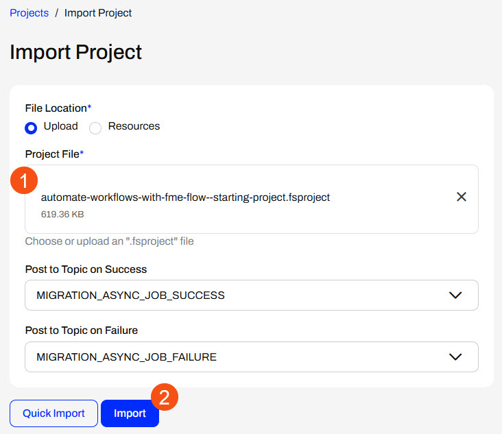
5) The first step is Preview Content, where you may choose not to overwrite existing items. If all your items are New Items, you don't need to worry about overwriting existing items. Click Continue.
6) The next step is to select connections and tokens to import. By default, they are not selected to be imported. Select the FME Training PostGIS Database Connection to import. If it isn't imported, the workflows will not run successfully. Click Continue.
7) The Resolve Owners step only allows you to reassign the project contents to a different user if the admin user doesn't exist on your FME Flow. Click Continue and then click Import Project from the Additional Options step. The project will import and display its import status from the same page.
If the project import failed, check that you uploaded the encryption key and repeat the process. If it still fails, contact us at train@safe.com.
Output Attributes
Each FME Flow Automations trigger and action has two output ports: success and failure. When FME Flow sends messages through these ports to downstream actions, it includes key-value pairs that extract information from the JSON message. Each trigger and action type has pre-defined Event Attributes and Custom Attributes that the Automation author may create. You may reference these Output Attributes in other actions downstream in the Automation.
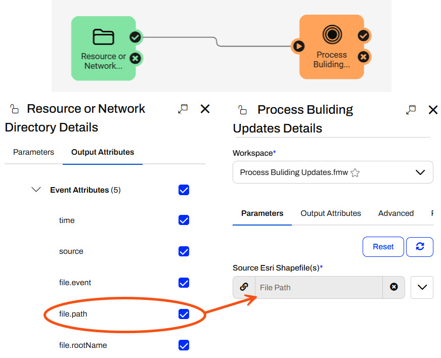
For example, you may reference the file.path attribute from the Resource or Network Directory trigger in a source file parameter in a downstream Run a Workspace action.

For more information on Output Attributes and Automation Parameters, please review the Respond to Real-time Events course.
FME Flow Automations Writer
While Output Attributes allow you to pass some basic information about each trigger or action downstream, the Run a Workspace action only sends job success or failure information. The Run a Workspace Event Attributes do not include any information about the data the workspace processes. Custom Attributes also don't contain options to link to that information. However, the FME Flow Automations Writer helps overcome this problem and extracts information from within a workspace into an Automation.
Like any other writer, you add the FME Flow Automations Writer to your workspace.
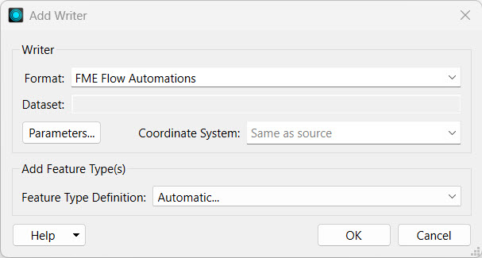 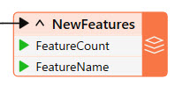
When you add the workspace to a Run a Workspace action in an Automation, an additional output port is created for the Automation Writer.
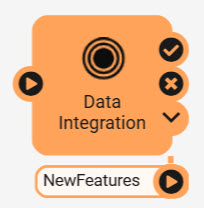
FME Flow outputs a JSON object from the Automations Writer port for each feature that routes to the writer within the workspace. FME Flow creates one output port for each Automations Writer feature type in the workspace.
Each feature contains values for the attributes added to the action's Output Attributes.
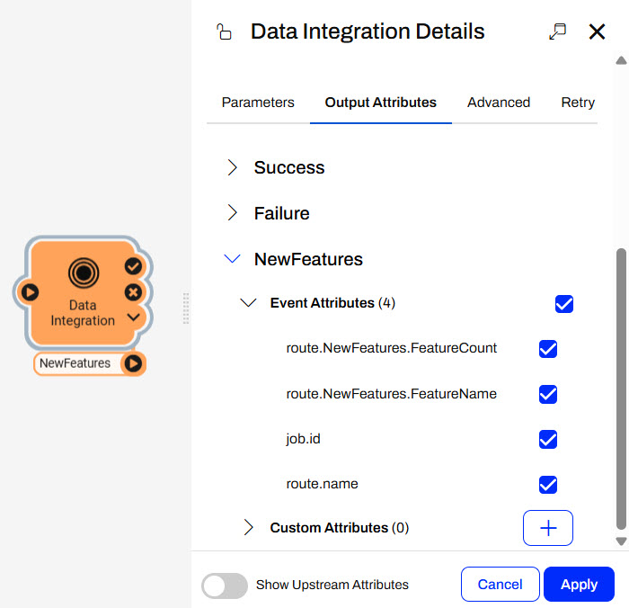
To use these attribute values in the Automation, you link to the Automation Writer attributes in downstream actions. By doing so, you can control the flow of your Automation based on the data you are processing within your workspaces.
The Automations Writer offers flexibility in what information you pass out of a workspace and into the Automation. You can create as many output ports as required to allow advanced filtering or pass multiple messages to numerous downstream actions.
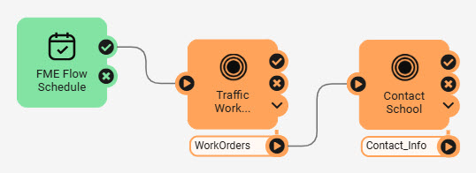
For example, the WorkOrders port in this workspace outputs features for work orders in school zones that have not yet been processed. If twenty features are passed through the port, the Contact School workspace will run twenty times to process each work order.
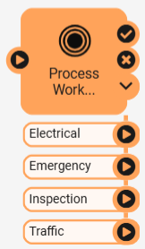
In this example, the workspace processes work orders and filters them based on their type. For each run of the workspace action, multiple features may be sent through each port, which will likely run different workspaces downstream according to their type.
Exercise

Jennifer previously created an Incoming Building Footprints Automation that processes shapefiles of building footprint updates, writes the updates to a geodatabase, and sends an email with the workspace's translation status. She will build off that scenario and send an email with summary information about the updates. To get the summary information about the updates from the workspace to the Email external action in her Automation, Jennifer must use an FME Flow Automations Writer.
Follow along with Jennifer's steps as she adds an Automations Writer to her workspace and configures her Automation to send out summary information on the building updates.
1) Open Starting Workspace
Jennifer opens her workspace ( C:\FMEData\Workspaces\AutomateWorkflowsWithFMEFlow\use-the-automations-writer.fmw) in FME Workbench. It simply reads a shapefile of updates and writes the updates to a SpatiaLite database.
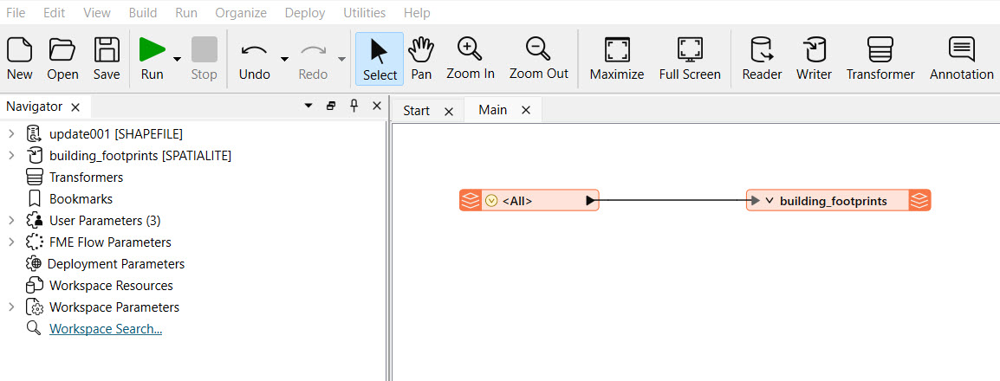
2) Create Summary Information
Jennifer adds an Aggregator transformer to the shapefile reader.
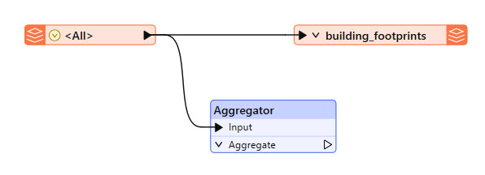
Jennifer double-clicks the Aggregator to open its parameters. She only makes two changes:
- Accumulation Mode: Use Attributes from One Feature
- Number of Aggregated Features: NumberOfUpdates
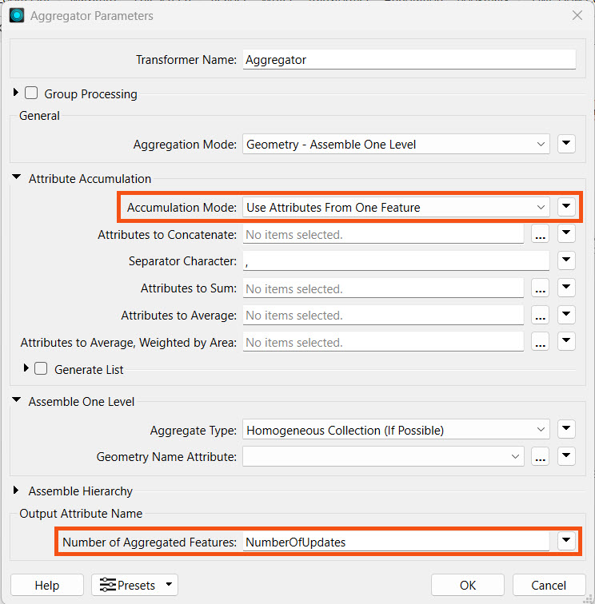
She clicks OK to close the Aggregator Parameters.
3) Add an Automations Writer
Jennifer clicks Writer on the top toolbar to open the Add Writer dialogue. For Format, she selects FME Flow Automations. She ensures the Feature Type Definition is set to Automatic... and clicks OK.
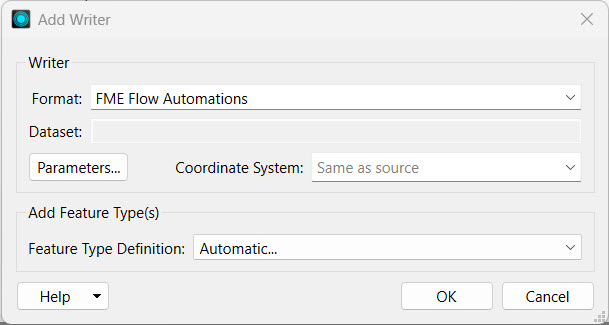
FME prompts Jennifer to configure the Feature Type. She sets the Feature Type Name to JobSummary and clicks OK.
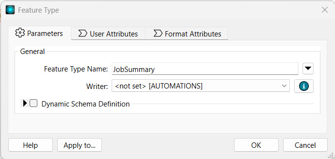
FME adds the Writer Feature Type to the canvas, and Jennifer connects it to the Aggregator output port.
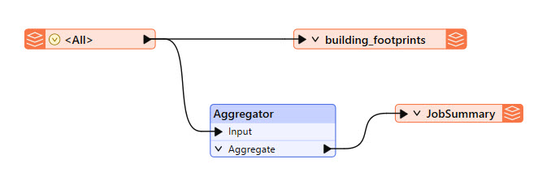
4) Clean-up Attributes
After she connects the writer feature type to the Aggregator, Jennifer notices that all the attributes from the shapefile are included in the writer. She doesn't need all the information in the Automation, so she will remove some attributes. She double-clicks the JobSummary writer feature type and goes to the User Attributes tab. She changes the Attribute Definition to Manual and manually removes all the attributes except for the NumberOfUpdates.
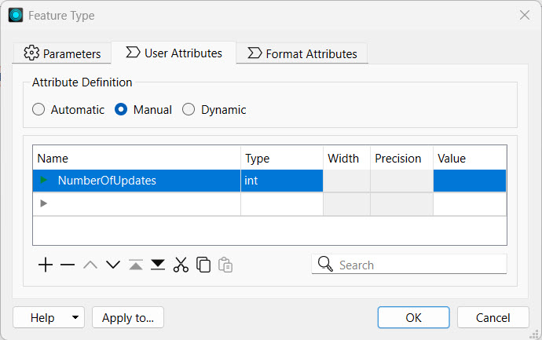
She clicks OK, then checks the JobSummary attribute drop-down. She only has the NumberOfUpdates and fme_feature_type.
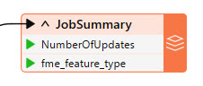
5) Publish to FME Flow
Jennifer clicks Publish in the FME Flow Connection toolbar.

Jennifer selects the Training repository. If it doesn't exist, she clicks New... and adds a new repository named Training.
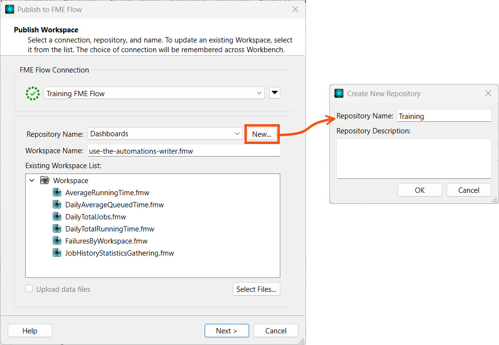
She doesn't need to upload files since the workspace's source data will be sent from the Automation's trigger. She clicks Next.
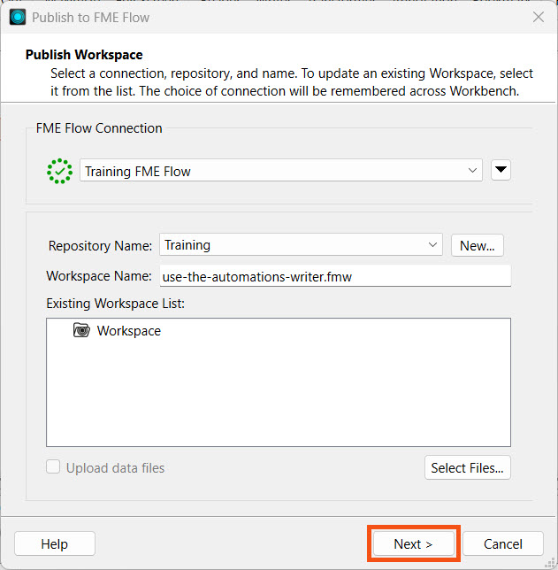
She registers the workspace with the Job Submitter service and clicks Publish.
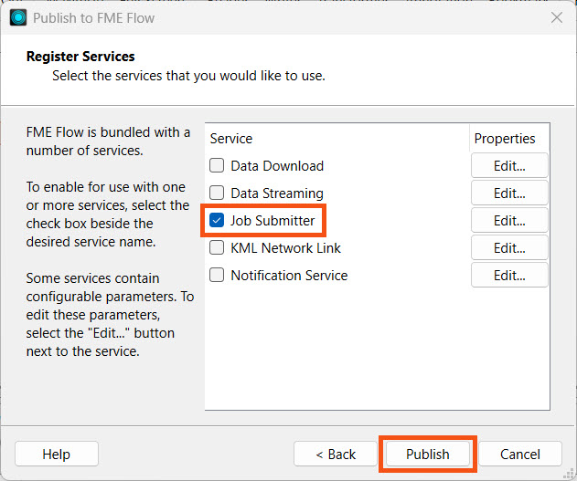
For more information on publishing workspaces to FME Flow and FME Flow's services, see the Deploy Workspaces on FME Flow course.
6) Edit Automation
Jennifer navigates to FME Flow and opens her Automation (Automations-Writer-Template).
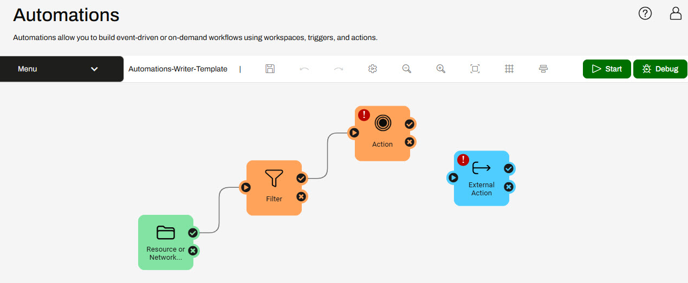
Jennifer has already built a Resource or Network Directory trigger that monitors the BuildingUpdates folder on FME Flow and added a Filter action to filter for shapefiles (.shp). The Action and External Action are ready for Jennifer to configure.
If you still have your Incoming Building Footprints Automation from Respond to Real-time Events, you may continue editing it. Otherwise, you can import the Automations-Writer-Template Automation with the automate-workflows-with-fme-flow--starting-project.fsproject.
7) Add Run a Workspace Action
Jennifer clicks on the Action icon to open its details. She sets the action to run the use-the-automations-writer.fmw workspace she published to the Training repository.
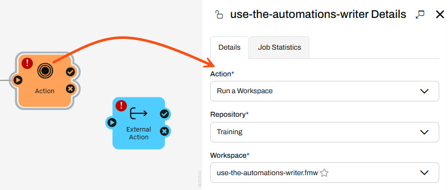
For the Source Esri Shapefile(s) parameter, Jennifer selects the File Path attribute in the Directory expandable section using the drop-down menu.
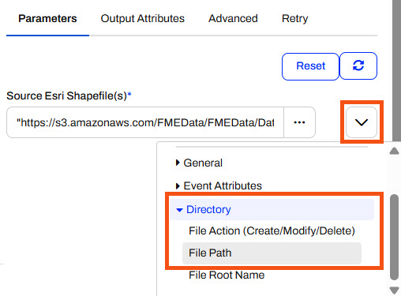
Jennifer leaves the other parameters as their default values and clicks Apply to close the pane.
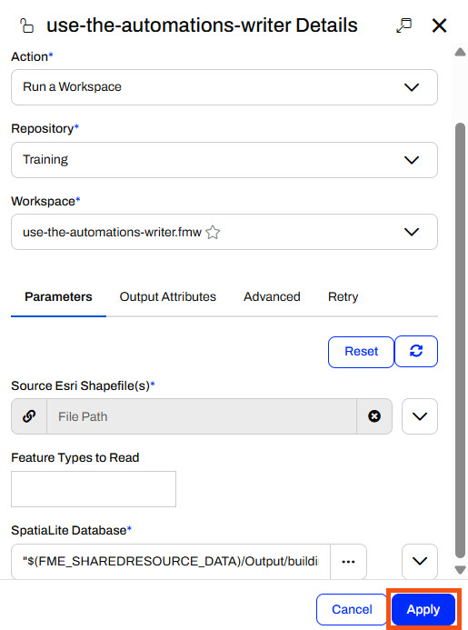
The Run a Workspace action updates and adds a port for the JobSummary Automations Writer in the workspace.
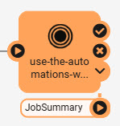
9) Add an Email External Action
Jennifer connects the external action to the JobSummary port and opens the external action details. She selects the Email (send) action.
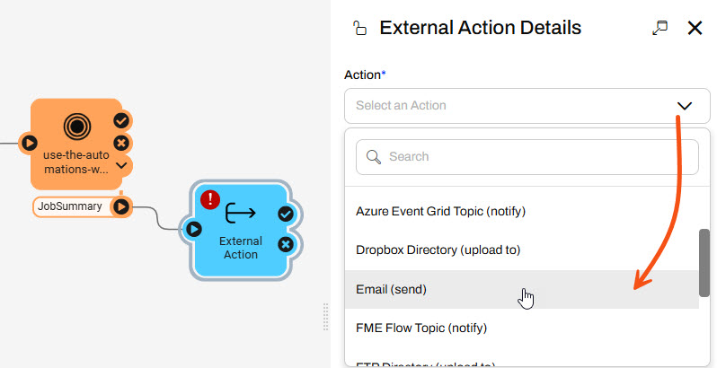
Jennifer will configure the action to use a Gmail account, so she selects Gmail using the Load Template option and pre-populates some of the SMTP parameters.
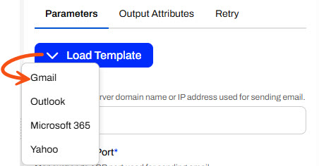
Jennifer enters these values for the SMTP parameters:
- SMTP Account: training.fmeflow@gmail.com
- SMTP Password: wjdmzjdkujkzmplw
- Connection Security: SSL/TLS
This Gmail account password changes regularly. Please only use it for FME training purposes, or configure your SMTP account for the Email action.
Jennifer enters her email for the Email To parameter and uses training.fmeflow@gmail.com for the Email From parameter.
For the Email Subject, Jennifer types Building Updates Notification.
For the Email Body, Jennifer uses the drop-down arrow options to select the Text Editor.
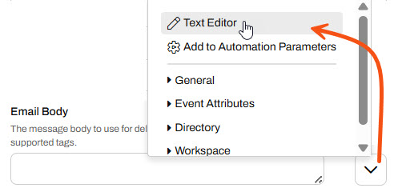
In the Text Editor, Jennifer enters the following message:
The Building Footprints database has been updated! {route.JobSummary.NumberOfUpdates} records were updated.
To add the {route.JobSummary.NumberOfUpdates} parameter, Jennifer expands the Workspace and JobSummary tabs and selects NumberOfUpdates.
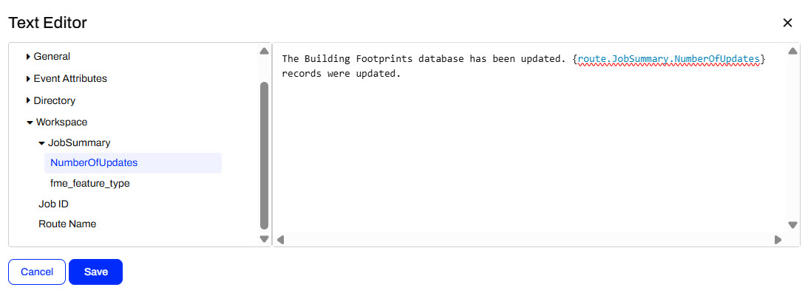
Jennifer clicks Save to close the Text Editor.
Once Jennifer enters all the required parameters, she clicks Validate to ensure her SMTP email settings are valid.
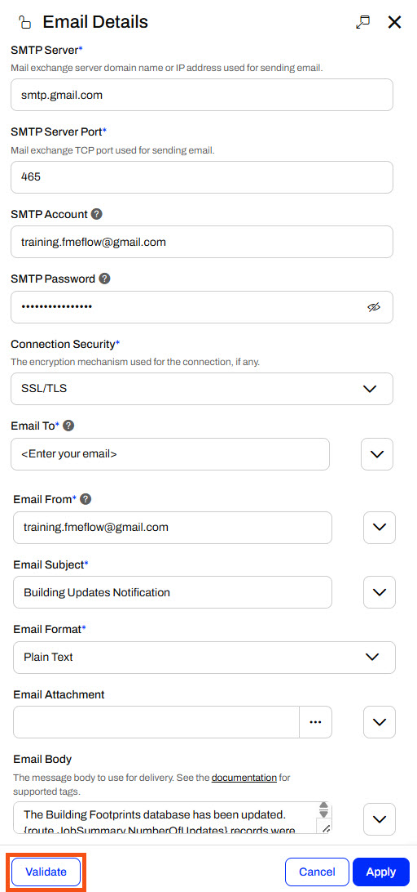
Once Jennifer's parameters are valid, she clicks Apply to close the Email action details.
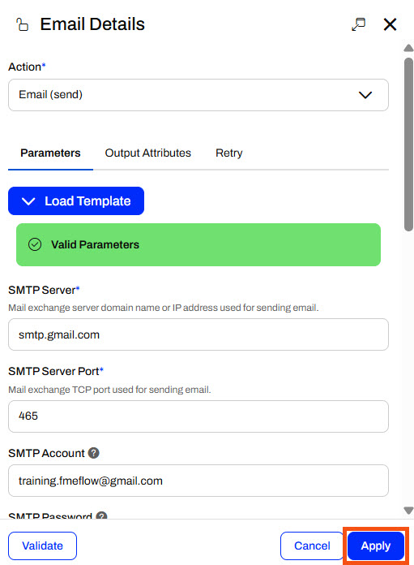
9) Save and Start Automation
Jennifer saves her Automation, then clicks Start to monitor the folder for file changes.
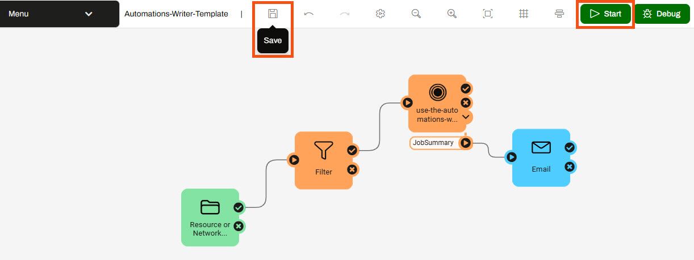
10) Upload Shapefile to Trigger Automation
With her Automation running, Jennifer navigates to Resources > Data > BuildingUpdates and uploads all four files of a shapefile of updates (C:\FMEData\Data\Engineering\BuildingFootprints).
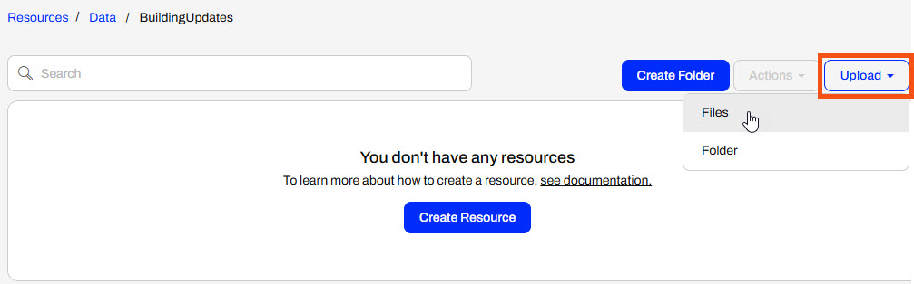
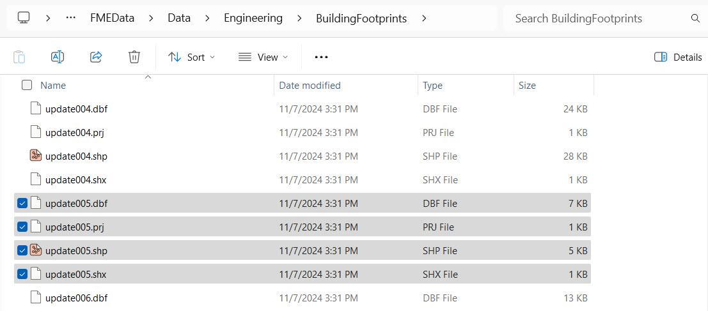
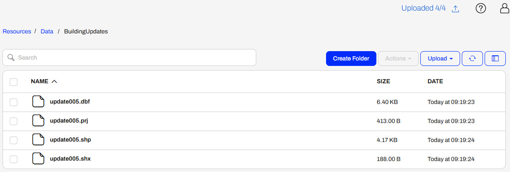
After a minute, Jennifer returns to her Automation and refreshes it to see the event counts update to reflect the shapefile being processed.
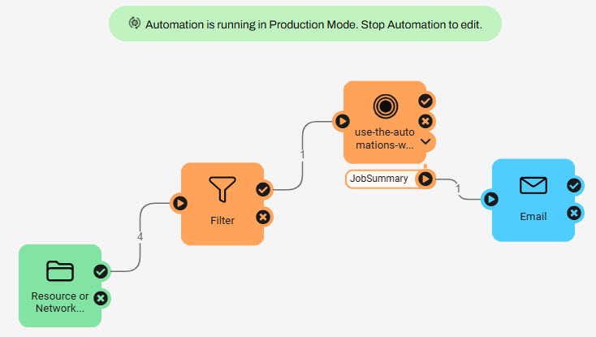
She also received the email containing information about the number of updates added to the database from the shapefile.
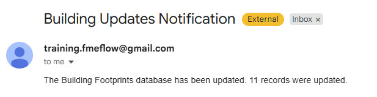
Jennifer has successfully built an Automation to process shapefiles for building updates and update a database. She used an Automations Writer to pass summary information about the number of updates from the workspace to send an email.